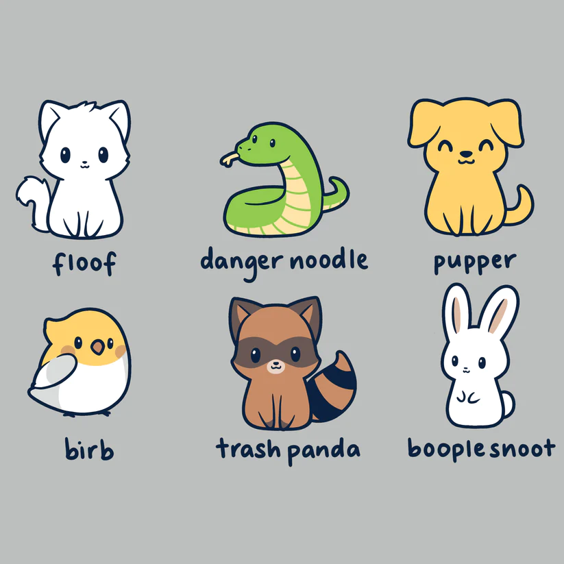

GDWD 105 - Agenda for April 30th
Week 25 Day 2 (Navigation & Responsiveness - Day 3)
Attendance Question
-
If you could have any creature (either real or fantastical)
as a pet, what would you choose?

Deliverables for Today
- ExerciseMedia Queries
- ExerciseModernizing George RR Martin
Announcements (6pm-6:10pm)
Period 1 (6:10pm-7:10pm)
- ExerciseMedia Queries
- DemoMedia Queries and Responsiveness [Part 2]
Small Break (10min)
Period 2 (7:20pm-8:30pm)
- DemoMedia Queries and Responsiveness [Part 2]
- ExerciseModernizing George RR Martin
Dinner Break (45min)
Period 3 (9:15pm-11pm)
- ExerciseModernizing George RR Martin [cont.]